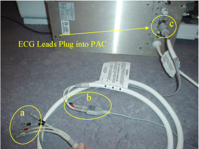
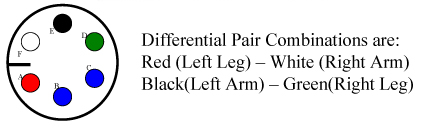

Operating Documentation
Direction 5133330-3, Rev# 14
Signa EXCITE HD 3.0T Service Methods
Module Version 1.0, Version Date 5/15/07
Operating Documentation |
| Required Persons | Preliminary Reqs | Procedure | Finalization |
|---|---|---|---|
| 1 | Not Applicable | 5 mins | Not Applicable |
| Item | Qty | Effectivity | Part# | Manufacturer | |
|---|---|---|---|---|---|
| Ohmmeter | 1 | - | - | - | |
| Cardiac Signal Waveform Simulator (if available) | 1 | - | - | - | |
If not already done, disconnect the ECG cables from the PAC and from each other.
Check the impedance of the ECG Cables. See Illustration 1. From each of the leads at point “a” to the other end of that lead at point “b” the impedance should be 60k Ohms ±5% tolerance. From each lead at point “b” to its respective connection at point “c”, the impedance should be 0 Ohms. Illustration 2 shows a pin-diagram of the connection at point “c”
Connect the white High Impedance MRI ECG Lead wires to the grey ECG Patient cable by matching the colors on the white cable to the colored dots of the grey cable.
Plug the open end of the grey ECG Patient cable in to the ECG port of the PAC.
Illustration 1: PAC Assembly With ECG Leads Connected

As an additional functional test of the ECG leads, if there is a cardiac waveform simulator available at the site, connect the leads to the simulator. Open the “Gating Control Screen” from the Scan Desktop. Select “Standard Gating” and cycle through the three different trigger leads, ECG1, ECG2, and ECG3. There should be a cardiac waveform displayed for each of the three trigger lead selections.
Illustration 2: Pin Diagram Of ECG Lead

Return the system to the patient scanning condition.
Do a check scan to insure the system is operating properly.